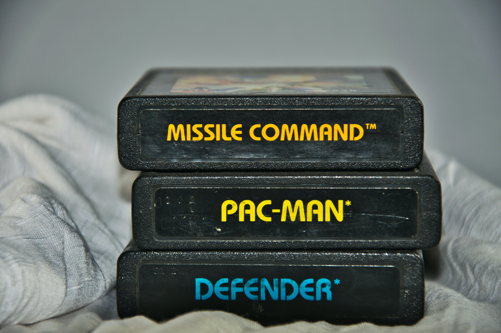

Fishing has recently become my favorite and only recreational hobby. It
is the most enjoyabale way for me to get out in nature
and find some semblance of peace in the world. I even invested in a
GoPro to do vlogs. I am a frequent shopper at
Bass Pro Shop and
Academy Sports
Im by no means good at fishing. In fact, it is one of the few hobbies i
have and i don't do it for personal glory. But enjoy the glory in
natures beauty. Sitting bankside with great friends and having a beer
while waiting for a bite..
Music Production
My interest in making music started at a young age while i took piano
lessons. Initially, I was against learning how to play. Maybe it was
because for first time I had to practice to get better. It wasnt instant
gratification. But what I learned is too appreciate growth.
Feeling like it was the only thing at the time I was passionate about
enough to earn my Bachelors, I attended college. There i developed a
thirst for knowledge on all aspects of music creation.
I learned how to maniuplate sound for foley and game design. Music
composition was something personal though. This is when I learned how to
express myself artisticly. It was therapy as well. It brought me joy.
It started with computer games in the 80s before I got my first console,
an Atari. My favorite games were Chopper city, and Pacman.

I went through all the consoles. Nintendo was one of my favorite
consoles. I was a master (so i thoguht) at DuckHunt. I also loved to
play Who framed Roger Rabbit. Not too many remember that game. Here is
some game play to
check it out below!:
Now, I am more of a social gamer. So multiplayer is my go to. It all
started with the Call of Duty franchise. Being a onlu child, I remember
playing the first COD and thinking how awesome it was to play with
people around the world. First person shooters had a great run and still
play from time to time. Now I spend most my gaming time playing Ark
Survivial on my Playsation. I aslo enjoy my Occulus from time to time.
/> />


 /> />
/> />